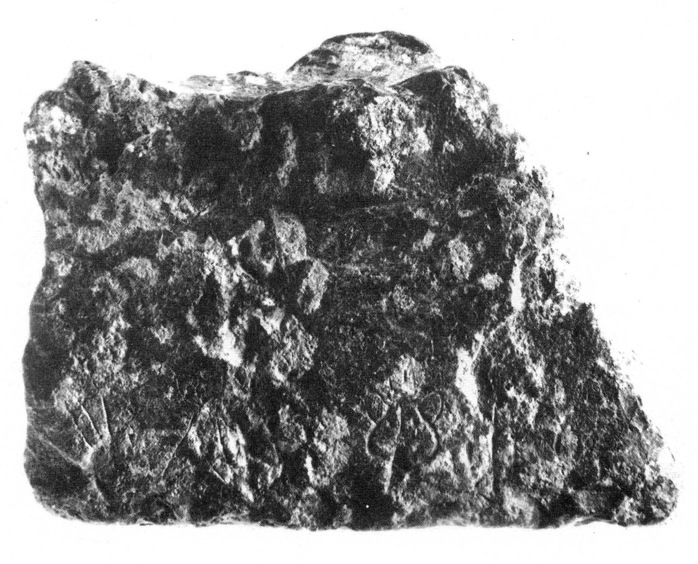
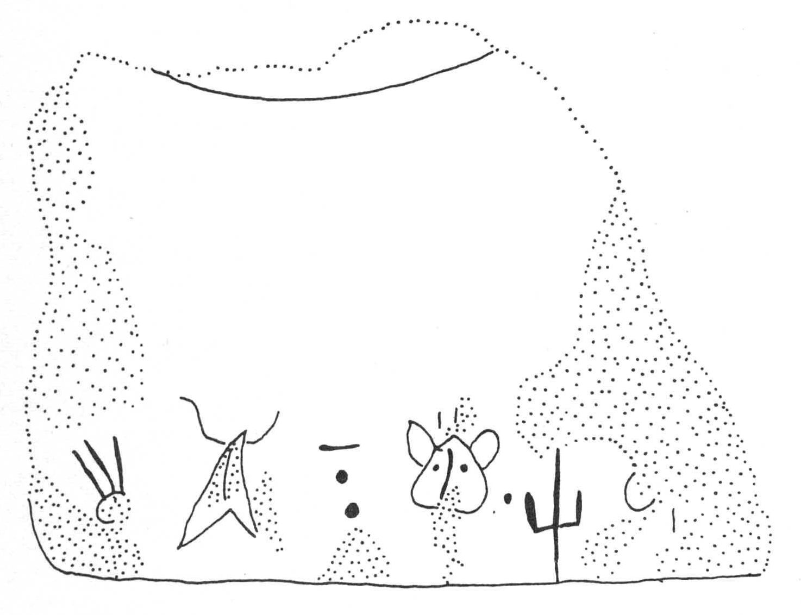

-
IOZa15
Names
IOZa15, IO Za 15
Support
Stone vessel
Location
Iouktas
Findspot
Unavailable


Scribe
Unavailable
Context
Not Available
Dimensions
Catalogue
Hiraklion Museum
Readings
1 1 0 I none
1 1 0 PI none
1 1 0 NA none
1 1 0 MA none
1 1 1 *900 none
1 1 2 SI none
1 1 2 RU none
1 1 2 TE none
𐘚𐘢𐘅𐙁𐄁𐘤𐘘𐘃
IPINAMA*900SIRUTE
𐘚𐘢𐘅𐙁𐄁𐘤𐘘𐘃
IPINAMA*900SIRUTE
IO Za 15
, square Libation Table, serpentine (HM 4744;
Kar. 1987).
]I-PI-NA-MA • SI-
RU
-[TE
Commentary © John Younger
References
papers/IOZa15.pdf